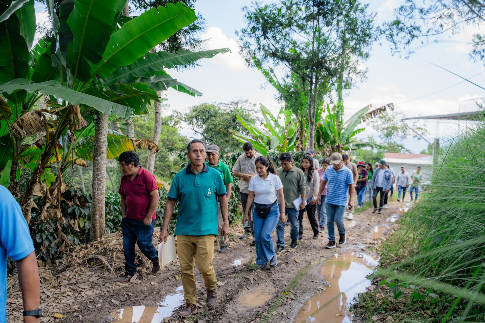
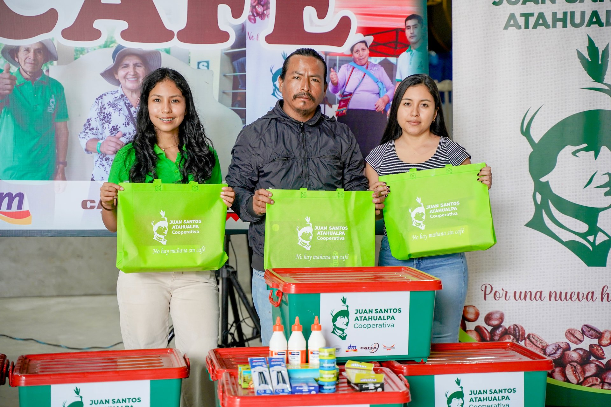
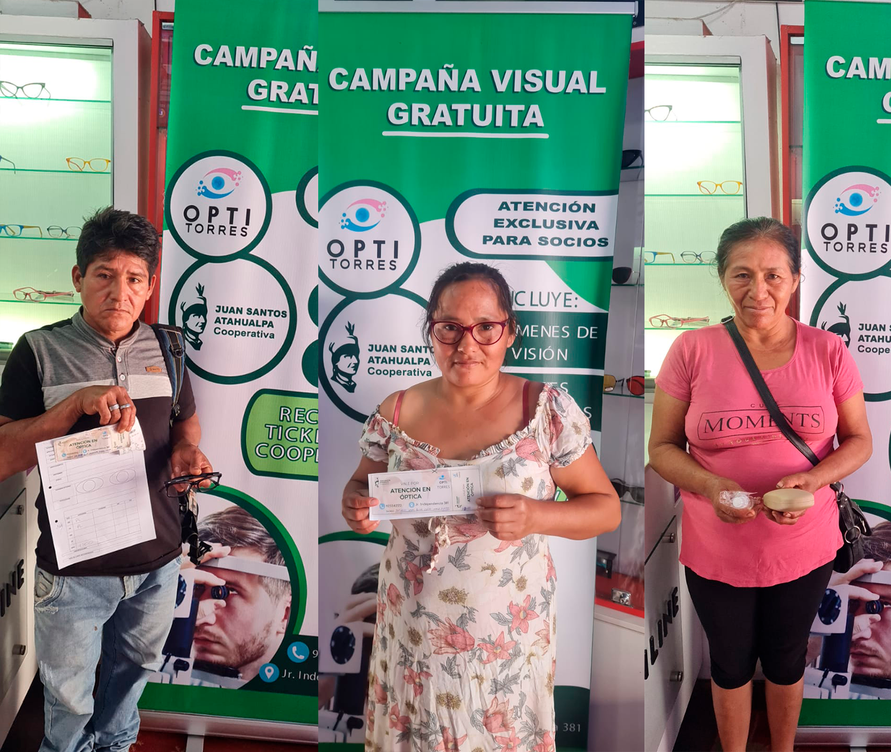

NHMSC
2024
Pasantías Técnicas
45 productores capacitados en procesamiento de beneficio y control de calidad en laboratorio.
45
Productores
100%
Completado

NHMSC
2024 . 2025 . 2026
Útiles Escolares
Kits educativos completos entregados a los hijos de socios al inicio del año escolar.
500+Niños
100%Completado
NHMSC
2025 . 2026
Pasantías Técnicas
45 productores y técnicos capacitados
45Productores
100%Completado

NHMSC
2024
Campañas dentales y visuales
125 productores atendidos
125Productores
100%Completado